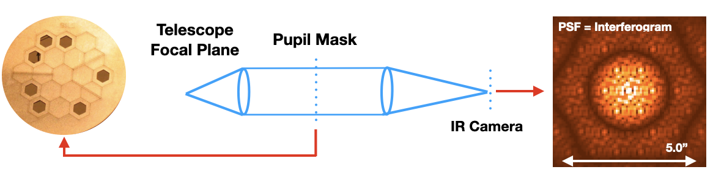
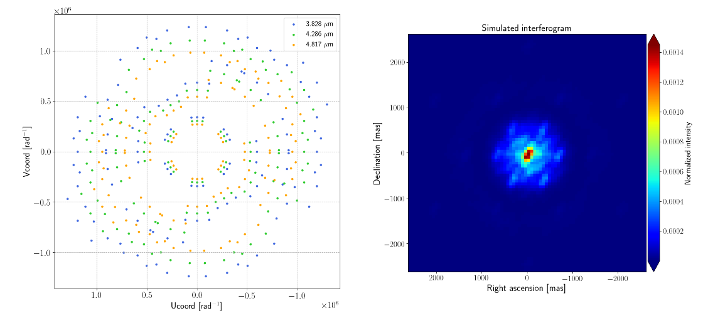
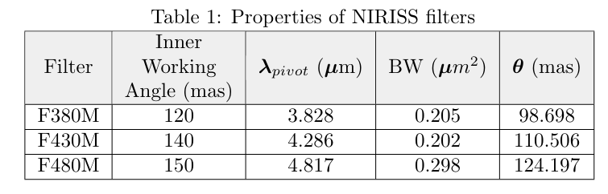
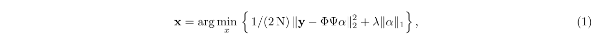
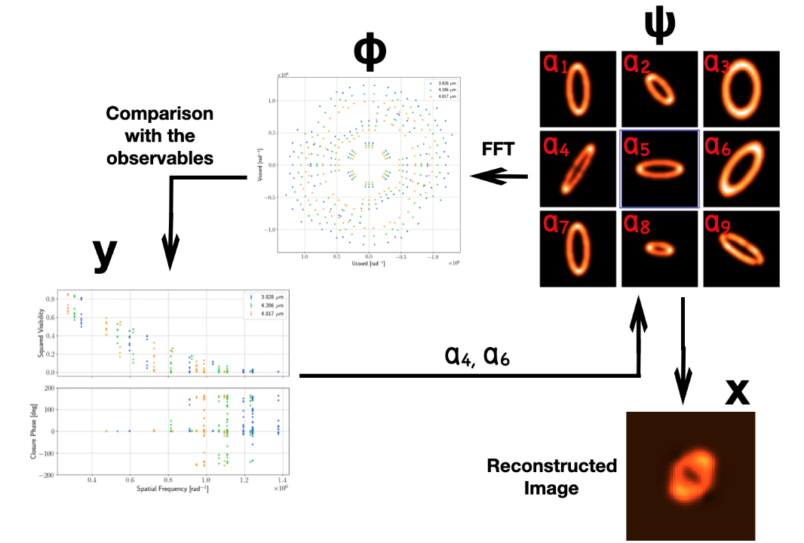
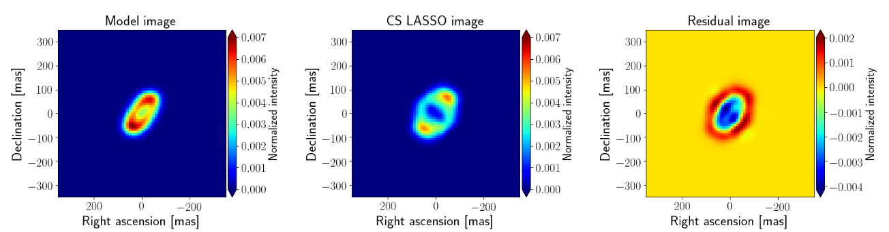
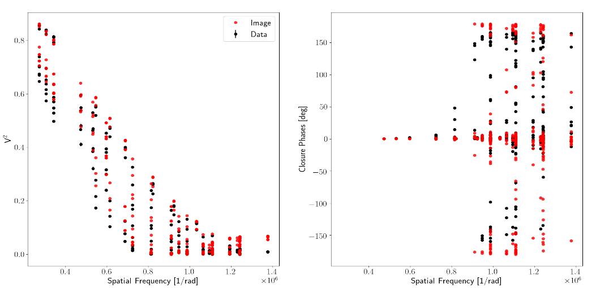

This repository includes software to recover infrared interferometric images based on Compressed Sensing (CASSINI/LASSO and CASSINI/SAMPip V1.0)
Link to the GitHub repository with the code, click HERE
1 Brief Introduction to Compressed Sensing
Compressed Sensing (CS) allows us to recover a signal with less samples that the ones established from the Nyquist/Shannon theorem (see e.g. 1-3). For the technique to work, the signal must be sparse and compressible on a given basis. It means that the signal can be represented by a linear combination of functions with a small number of non-zero coefficients. In CS, a set of measurements, y, of a given signal, x, can be encoded by a multiplication of the matrices Φ, Ψ, and the sparse vector α. Ψ is the transformation basis where the full signal, x, is sparse, and only a few coefficients in the vector α are non-zero. Φ is, thus, the system of measurements under which the data are taken. For a visual representation of the matrices involved in CS see Fig. 1. It is important to remark that the number of measurements in y is considerably smaller than the number of features/columns in in Ψ, therefore, the inverse problem to find α is "ill-posed". CS establishes that if the product Θ = ΦΨ satisfies the Restricted Isometry Property (RIP)2, 4, we will be able to recover the signal from the sub-sampled measurements. Therefore, compressed Sensing offers us a framework to solve the "ill-posed" inverse problem by a regularized optimization, using as prior the sparsity of α and/or the degree of compressibility of the signal.
This repository includes code to recover infrared interferometric images using CS from simulated Aperture Masking data. The Aperture Masking data is simulated as expected to be recorded by the near-infrared imager NIRISS on-board of the James Webb Space Telescope (JWST).

2. James-Webb Space Telescope Simulations
NIRISS (Near Infrared Imager and Slitless Spectrograph) is an infrared (band-pass = 0.8 - 5μm) high-resolution camera which allows us to observe an object using Fizeau interferometry in the form of Sparse Aperture Masking (SAM). SAM is a technique which allows us to transform a telescope into an interferometer by placing a non-redundant mask with several pin-holes in the pupil plane of the telescope13. Therefore, at the image plane an interferogram is formed (see Fig. 2). From the interferograms, interferometric observables (Fourier visibilities and phases, squared visibilities and closure phases) are extracted. The non-redundant mask on-board of NIRISS has 7 pinholes, which produces 21 visibilities and 35 closure phases per snapshot.
We obtained the simualted data from our collaboration with the NIRISS team at the Space Telescope Science Institute (STScI). In order to reduce the interferograms of the simulatiosn, we fitted the fringes directly in the image plane using a model of the mask geometry and filter bandwidth. From this model the observables were computed using a single-value decomposition (SVD) algorithm. This method is similar to the one presented by 14. To evaluate the validity of our algorithm, we compared the observables extracted with the ones obtained with ImplaneIA15 and AmiCal, finding similar results.

3. Reducing Aperture Masking data with CASSINI/SAMPip v1.0
To reduce the SAM data, as part of CASSINI, we developed a software called SAMPip. It is included in this repository. The software consist in a series of Python scripts to perform the reduction. We included a test.py script to load a simulated data as example for the reduction. This script setups the code according to the instrument requests. For example:
####### The tolowing parameters are necessary to run SAMPip ##################
mask_filename = '7holes_jwst_mask.txt' #A text file with the mask geometry
wave = 3.828e-06 #Central wavelength of the observations (meters)
bandwidth = 0.205e-06 #Bandwidth of the observations (meters)
hole_size = 0.82 #Pinhole size (meters)
imsize = 80 # Image size (pixels)
px_scale = 65.6 #Pixel scale (pixels)
hole_geom = 'HEXAGON' #Geometry of the pin-holes (hexagon for the JWST)
inst = 'JWST' #Instrument to be used
arrname = 'SIM' ## This could be DATA or SIM depending if the reduction is on real data or simulated ones
rotation_angle = 0.0 ### In case the non-redundant mask is not propely aligned with the nominal position
oversample = 1.0 ## Number of times to oversample the data (not tested yet)
data_filename = 'sci_psf3_w1.txt' ## Text file with the list of .fits files to be reduced
source = 'disk' ## The source name
#### Automatic from here, the following command produces an oifits file with all the data reduced in an OIFITS file
sim_SAMpip.simSAM_PSF (data_filename, mask_filename, wave, bandwidth, hole_size, px_scale, imsize, hole_geom, source, inst, \
arrname, rotation_angle, oversample)
To reproduce the interferometric observables from the example included in this repository, it is as simple as clone SAMPip from the GitHub repository:
git clone https://github.com/cosmosz5/SAMPip.git
and then running the following command in the Terminal:
python test.py
The previous command will go through the different data sets included and it will produce a series of .fits files for quality check purposes (to view the .fits files, users can use the DS9 software, together with the final OIFITS files. The output files are the following ones:
1. CENTERED_*.fits files > These are the centered input files. SAMPip does a fine adjustment of the interferogram centroid in the middle of the pixel grid (this option is not yet available but the files are produced).
2. MODEL_interferogram_*.fits > These are the models of the interferograms produced by the code. They should be quite similar to the input data files. We can use the MODEL files to inspect (quickly) visually how good is our fringe modeling (i.e., visibility extraction)
3. MODEL_interferogram_windowed_*.fits > These are the models of the interferograms produced by the code but they are windowed. Only the valid pixels for the model extraction have values different from zero.
4. MODEL_residuals+*.fits > These .fits files show the residuals between our fringe model and the input data.
5. MTF.fits > This .fits file includes the Mutual Trsfer Funcion of the interferogram
6. PSF.fits > This .fits file includes the model of the interferogram produced solely by the geometry of the non-redundant mask
7. cube_bl.fits > This .fits file contains the cube of the different interference pattern produce by each pair of pin-holes in the non-redundant mask.
8. hexa.fits > This file contains the diffraction pattern of the pin-hole geometry
9. hexagon.fits > This file contains the geometry of the pin-hole mask
10. WINDDAT_*.fits > These files are the windowed input data sets used for the model extraction
11. SIM_DATA_uncalib.*.fits > These are the OFITIS files with the reduced data. They are in a standard OIFITS format and includes all the interferometric observables extracted with SAMPip.
If different data sets are reduced, they can be combined with the oi_combine.fits python routine. It is a very simple script which call oi_merge.fits and js_oifits.fits. Those are two routines which reads the different data sets and write a combined OIFITS file with them. oi_merge.fits and js_oifits.fits are also included in the root directory of CASSINI/SAMPip. These two routines are also used by the during the data reduction. To combine the extracted OIFITS data, it is neccesary to create a .txt file with the oifits filenames of the data to be combined. an example of the oi_combine.fits content is the following one:
from readcol import *
cd = True
if cd == True:
import oi_merge as oi_merge
else:
import oi_merge2 as oi_merges#
import importlib
importlib.reload(oi_merge)
data = 'combine_data_tot.txt' ## Text file with the OIFITS files to be combined
[files] = readcol(data, twod=False)
merged = oi_merge.oi_merge(files)
merged.write('COMB_JWST_SAM_tot.fits') ## Output: COMBINED OIFITS file
The SAM data included as example to run the code consisted in the simulation of an inclined and asymmetric proto-planetary disk observed at three different filters (see Table 1) with the following central wavelengths: 3.8μm, 4.3μm and 4.8μm. Given the pointing limitations of the JWST, we considered a maximum of three pointing positions at a position angle(E->N) of -10◦, 0◦ and 10◦. To make the JWST/SAM simulations as realistic as possible, we included piston errors between 10 and 50 nm. These are typical expected error values of the instrumental transfer function. The simulated science data were calibrated with simulated interferograms of point-like objects with similar pistonerrors as the science data. The u-v coverage employed for image reconstruction includes 318 data points (V2 + Fourier phases + CPs) and combines the different simulated pointing positions and wavelengths (see Fig. 3).


4. Image reconstruction based on Compressed Sening
To solve the image optimization problem, the python scikit-learn17 library was used. More explicitly, the Least Absolute Shrinkage and Selection Operator (LASSO) algorithm18 was selected. This LASSO implementation uses a regularized minimization of the following form:

where N is the total number of elements in the sampled signal, y, and λ is the value of the hyperparameter that weights the regularizer. It is important to remark that the constraint region of the l1-norm has the form of an hypercube with several corners, which ensure sparsity of α for a convex optimization problem. This is not the case by using, for example a Ridge regression19 with ‖α‖22, where the constraint region is a rotational invariant n-sphere. This can also be interpreted as LASSO being a linear regression model with a Laplace prior distribution, with a sharp peak at its mean. In contrast, Gaussian prior distribution of coefficients in a Ridge regression20 has a more soften peak around its mean.

Before performing the minimization, a precomputed Dictionary (Θ) with 104 different disk-like structures was created. The random images of the disks were created using a pixel grid of 71×71 pixels with a pixelscale of 10 milliarcseconds (mas). To transform those images into the system of measurements of our data, their Fourier transform were performed using a proprietary implementation of the regularly spaced Fast Fourier Transform (FFT) and, the observables (squared visibilities, Fourier phases and closure phases) were obtained for the sampled u-v frequencies. Together with the code in this repository, we included a sample of the dictionary build from our database of models. The code create_dict.py is an example of how can we read a set of images and transform them into the Fourier Space sampled with our data. This script imports the script called oitools.py.
oitools.py contains a small library of routines to perform transformations and data extraction on both, the visibility domain and the image one. One of the most interesting and, indeed, the one that is used to extract the interferometric observables from the images is oitools.compute_vis_matrix. This piece of code uses a dedicated Direct Fourier Transform to get specific amplitudes and phases from the images at the specific spatial frequencies sampled with an interferometric array. The code is the following one:
def compute_vis_matrix(im, u, v, scale):
import numpy as np
import math
import pdb
sz = np.shape(im)
if sz[0] % 2 == 0:
x, y = np.mgrid[-np.floor(sz[1] / 2 - 1):np.floor(sz[1] / 2):sz[1] * 1j,
np.floor(sz[0] / 2 - 1):-np.floor(sz[0] / 2):sz[0] * 1j]
else:
x, y = np.mgrid[-np.floor(sz[1] / 2):np.floor(sz[1] / 2):sz[1] * 1j,
np.floor(sz[0] / 2):-np.floor(sz[0] / 2):sz[0] * 1j]
x = x * scale
y = y * scale
xx = x.reshape(-1)
yy = y.reshape(-1)
im = im.reshape(-1)
arg = -2.0 * math.pi * (u * yy + v * xx)
reales = im.dot(np.cos(arg))
imaginarios = im.dot(np.sin(arg))
visib = np.linalg.norm([reales, imaginarios])
phase_temp = np.arctan2(imaginarios, reales)
phase = np.rad2deg((phase_temp + np.pi) % (2 * np.pi) - np.pi)
return visib, phase
The input parameters in oitools.compute_vis_matrix are: (i) the image from which the observables are computed; (ii) the u and v coordinates of the interferometer and; (iii) the pixel scale used in the image (this input is in units of radians).
create_dict.py also centered and scaled earch set of observables to have a mean equals to zero and standard deviation equals to the unity. Finally, the different observables were merged into a single column vector (or atom). The different atoms were stacked to create the different columns of the final Dictionary and stored into a python binary file. Once the Dictionary was integrated. The assembled dictionary of protoplanetary disks is included in the repository enconded into a numpy binary file. (filename = Dict3.npy)
Once the Dictionary was integrated, LASSO was used to solve for the non-zero coefficients of α that fit the observables and reconstruct the image. LASSO worked over 103 iterations with a pre-defined value of the hyperparameter λ. Figure 4 displays a schematic representation of the described algorithm.
This is the main part of the code for recovering the images from the interferometric data. The code to run LASSO is called CS_JWST_v1.py. This routines uses the dictionary (in this case Dict3.npy) together with the combined data set to recover an image. The user has to modify the following entry parameters in the script:
oi_data = 'COMB_JWST_SAM_tot.fits' #This is the filename of the input (COMBINED) data set
dict_filename = 'Dict3.npy' #Dictionary filename
input_path = ['/Users/donut/Desktop/dataset/'] # Input path for the galery of model images
scale = 10.0 # Pixel scale of the generated images in milliarcseconds
hyperparameter = 0.5 # Hyperparameter lambda for the LASSO minimization
maxit = 10000 # Maximum number of iterations for the reconstruction
output_filename = 'recovered_im_lasso.fits' #Output filename
The script CS_JWST_v1.py returns the recovered image in .fits format. Figure 5 shows the best-fit image obtained with our CS LASSO algorithm together with the original model image. For the example showed in this simulation, the general structure of the disk is reproduced. The reconstructed morphology shows the correct inclination and position angle. It also shows the brighter emission of the ring along the semi-major axis. The inner cavity is also clearly observed. However, the size of the semi-minor axis is larger than the one of the model image. This can be appreciated in the map of the residuals formed by subtracting the image model from the reconstructed one. Figure 6 shows that the observables are well reproduced by the reconstructed image.


To verify the quality of the reconstructions with the original set of observables, the repository includes the script called plot_obs.py. This piece of code produces a PNG file called "observables.png". This plot is similar to Figure 6 and it shows a comparison between the extracted obsevables from the reconstructed image and the original data. The input parameters of plot_obs.py are:
oi_data = 'COMB_JWST_SAM_tot.fits' #Data filename
im_rec = np.squeeze(pyfits.getdata('reconvered_im_lasso_0.001.fits')) #Recovered image filename
wave_range = [3.0e-6, 5.0e-6] #Wavelength range of the observations
scale = 10.0 ## Pixel scale in milliarcseconds
To evaluate the quality of our reconstructions, we also generated images using two other codes available in the community: BSMEM22 and SQUEEZE23. The first one uses maximum entropy for the regularization and a gradient descent method with a trust region for the minimization. The second one could use different types of regularizations, including sparsity (in the form of the l0-norm). For the minimization a Markov-Chain Monte-Carlo (MCMC) algorithm is employed. Similar pixel scale and grid parameters between CS and the reconstructions using BSMEM and SQUEEZE were used. Figure 7 shows the reconstructions obtained with each one of the different software. Notice that the three algorithms managed to recover the general (position angle and size) structure of the target. However, different artifacts are observed. For example, the BSMEM image shows the two brightest spots of the disk. However, it does not recover the central cavity. This can be easily explained because the Maximum Entropy enforces a smooth brightness transition between the different pixels in the image. The SQUEEZE reconstruction using the l0-norm shows a map with a ”granular” structure, which does not provide well defined loci for the maximum. This image does not show a clear cavity. We remark that the SQUEEZE image can be improved by using additional regularizers. Nevertheless, this is obtained at the cost of being slower. Also, the selection of the hyperaparameters becomes more complicated for more regularizers involved in the reconstruction. Both the SQUEEZE and BSMEM images show additional artifacts around the central source. This is not the case of the CS LASSO image, which shows a uniform background. To estimate the signal-to-noise ratio (SNR) between the peak of the emission and the noise floor of the images, we computed the mean value of the background using all the pixels outside a circular mask with a radius of 15 pixels centered at the middle of the image. The SNR values are: 3.7 x 104, 1.0 x 102 and 0.8 x 102 for the CS LASSO, SQUEEZE and BSMEM images, respectively. These values suggest that the CS LASSO reconstruction achieved a contrast two orders of magnitude larger than the other reconstructions. This is particularly encouraging for the case of high-contrast observations as the ones expected with the JWST. A more detailed analysis of the contrast ratios achieved with CS will be done in a future work.

SUMMARY
-
To extract observables from SAM data- Run the test.py script inside the SAMpip directory. Modify the script according with the data to be reduced. A description of the parameters used for the setup is included in this webpage. -
To combine SAM data- Run the oi_combine.py script inside the SAMpip directory. Modify the script according with the data to be combined. An oifits file is produced. A description of the parameters used for the setup is included in this webpage. -
To create a dictionary of structures for imaging- From a given galery of images with the desired structures, use the script create_dict.py. This code converts the images into atoms of the dictionary in the Fourier Space. For this, it uses the transformation routines included in oitools.py. The user can run create_dict.py at the root directory of the repository. This step should create a .npy binary file with the dictionary of structures to be used for the reconstruction. -
To recover an image- With the dictionary, run CS_JWST_v1.py. An example of the input parameters is included in this webpage. This code will produce the reconstructed image. To evaluate the quality of the reconstruction, the user can con plot_obs.py, in order to produce a plot of the synthetic observables extracted from the best-reconstructed image and the dataset. -
Additional tools- We recommed the user to explore oitools.py. This script contains a series of transformation and data handling routines that could be useful for evaluating the quality of the reconstructions and/or to vizualize the data. We expected to include a complete description of such tools in the forthcoming version of the software.
REFERENCES
[1] Donoho, D. L., “Compressed sensing,”IEEE Transactions on information theory52(4), 1289–1306 (2006).
[2] Candes, E. J., Romberg, J. K., and Tao, T., “Stable signal recovery from incomplete and inaccurate mea-surements,”Communications on Pure and Applied Mathematics: A Journal Issued by the Courant Instituteof Mathematical Sciences59(8), 1207–1223 (2006).
[3] Baraniuk, R., Davenport, M., DeVore, R., and Wakin, M., “A simple proof of the restricted isometryproperty for random matrices,”Constructive Approximation28(3), 253–263 (2008).
[4] Candes, E. J. and Tao, T., “Decoding by linear programming,”IEEE Transactions on Information The-ory51(12), 4203–4215 (2005).
[5] Carrillo, R. E., McEwen, J. D., and Wiaux, Y., “PURIFY: a new approach to radio-interferometric imaging,”Monthly Notices of the Royal Astronomical Society439, 3591–3604 (02 2014).
[6] Pratley, L., McEwen, J. D., d’Avezac, M., Carrillo, R. E., Onose, A., and Wiaux, Y., “Robust sparse imagereconstruction of radio interferometric observations with purify,”Monthly Notices of the Royal AstronomicalSociety473, 1038–1058 (09 2017).
[7] Vijay Kartik, S., Carrillo, R. E., Thiran, J.-P., and Wiaux, Y., “A Fourier dimensionality reduction modelfor big data interferometric imaging,”Monthly Notices of the Royal Astronomical Society468, 2382–2400(03 2017).
[8] Wiaux, Y., Jacques, L., Puy, G., Scaife, A. M., and Vandergheynst, P., “Compressed sensing imagingtechniques for radio interferometry,”Monthly Notices of the Royal Astronomical Society395(3), 1733–1742(2009).
[9] Wenger, S., Magnor, M., Pihlstrom, Y., Bhatnagar, S., and Rau, U., “Sparseri: A compressed sensingframework for aperture synthesis imaging in radio astronomy,”Publications of the Astronomical Society ofthe Pacific122(897), 1367 (2010).
[10] Li, S., Mi, T., and Liu, Y., “Sparse dual frames in compressed sensing,” in [Wavelets and Sparsity XIV],Papadakis, M., Ville, D. V. D., and Goyal, V. K., eds.,8138, 180 – 191, International Society for Opticsand Photonics, SPIE (2011)
[11] Doyon, R., Hutchings, J. B., Beaulieu, M., Albert, L., Lafreniere, D., Willott, C., et al., “The JWSTFine Guidance Sensor (FGS) and Near-Infrared Imager and Slitless Spectrograph (NIRISS),” in [SpaceTelescopes and Instrumentation 2012: Optical, Infrared, and Millimeter Wave], Clampin, M. C., Fazio,G. G., MacEwen, H. A., and Oschmann, Jacobus M., J., eds.,Society of Photo-Optical InstrumentationEngineers (SPIE) Conference Series8442, 84422R (Sept. 2012).
[12] Sivaramakrishnan, A., Tuthill, P. G., Ireland, M. J., Lloyd, J. P., Martinache, F., Soummer, R., Makidon,R. B., Doyon, R., Beaulieu, M., and Beichman, C. A., “Planetary system and star formation science withnon-redundant masking on JWST,” in [Techniques and Instrumentation for Detection of Exoplanets IV],Shaklan, S. B., ed.,Society of Photo-Optical Instrumentation Engineers (SPIE) Conference Series7440,74400Y (Aug. 2009).
[13] Sanchez-Bermudez, J., Schodel, R., Alberdi, A., and Pott, J. U., “NaCo/SAM observations of sources atthe Galactic Center,” in [Journal of Physics Conference Series],Journal of Physics Conference Series372,012025 (July 2012).
[14] Lacour, S., Tuthill, P., Amico, P., Ireland, M., Ehrenreich, D., Huelamo, N., and Lagrange, A.-M., “Sparseaperture masking at the vlt-i. faint companion detection limits for the two debris disk stars hd 92945 andhd 141569,”Astronomy & Astrophysics532, A72 (2011).
[15] Greenbaum, A. Z., Pueyo, L., Sivaramakrishnan, A., and Lacour, S., “An Image-plane Algorithm for JWST’sNon-redundant Aperture Mask Data,”798, 68 (Jan. 2015).
[16] Pauls, T. A., Young, J. S., Cotton, W. D., and Monnier, J. D., “A Data Exchange Standard for Optical(Visible/IR) Interferometry,”117, 1255–1262 (Nov. 2005).
[17] Pedregosa, F., Varoquaux, G., Gramfort, A., Michel, V., Thirion, B., Grisel, O., Blondel, M., Prettenhofer,P., Weiss, R., Dubourg, V., Vanderplas, J., Passos, A., Cournapeau, D., Brucher, M., Perrot, M., andDuchesnay, E., “Scikit-learn: Machine learning in Python,”Journal of Machine Learning Research12,2825–2830 (2011).
[18] Santosa, F. and Symes, W. W., “Linear inversion of band-limited reflection seismograms,”SIAM Journalon Scientific and Statistical Computing7(4), 1307–1330 (1986).
[19] Gruber, M., [Improving Efficiency by Shrinkage: The James–Stein and Ridge Regression Estimators],vol. 156, CRC Press (1998).
[20] Tibshirani, R., “Regression shrinkage and selection via the lasso,”Journal of the Royal Statistical Society:Series B (Methodological)58(1), 267–288 (1996).
[21] Rokach, L. and Maimon, O., [Data mining with decision trees. Theory and applications], vol. 69 (01 2008).
[22] Buscher, D., “Very high angular resolution imaging (iau symp. 158), ed. jg robertson & wj tango,” (1994).
[23] Baron, F., Monnier, J. D., and Kloppenborg, B., “A novel image reconstruction software for optical/infraredinterferometry,” in [Optical and Infrared Interferometry II],7734, 77342I, International Society for Opticsand Photonics (2010).